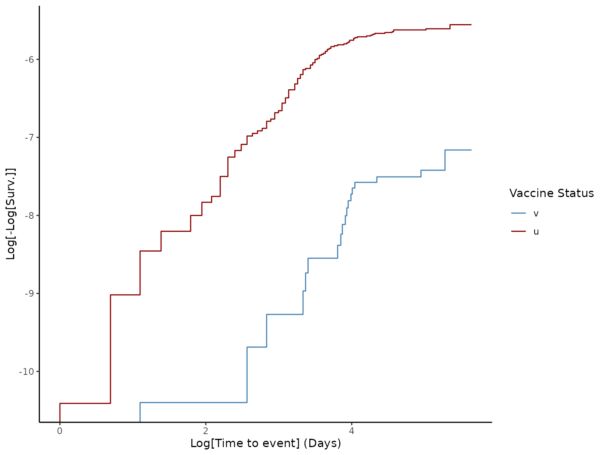

This function provides methods for estimating VE. It relies
on the implementation of the Kaplan-Meier estimator and the Cox model for
proportional hazards in the package {survival}. Currently, the default
method of the function is HR (Hazard Ratio). Thus, the VE = 1 - HR, where
HR is calculated using the Cox model. The proportional hazards hypothesis is
tested using the Schoenfeld test, and the resultant p-value is provided in
the results. Log-log plots are also generated using the Kaplan-Meier
survival estimator to provide a visual test for the proportional hazards
hypothesis. The functions uses the default name of columns
outcome_status, time_to_event and vaccine_status, and the default
status names v and u. However, custom names can be provided through the
parameters outcome_status_col, time_to_event_col, vacc_status_col,
vaccinated_status and unvaccinated_status.
The return is a list with the call and the name of the method used for
the estimation of VE (CI95%), the result of the performance test, and
a suitable plot for the method.
The object returned is compatible with the methods summary and plot.
Usage
effectiveness(
data_set,
start_cohort,
end_cohort,
method = "HR",
outcome_status_col = "outcome_status",
time_to_event_col = "time_to_event",
vacc_status_col = "vaccine_status",
vaccinated_status = "v",
unvaccinated_status = "u"
)Arguments
- data_set
data.framewith cohort information (see example).- start_cohort
Start date of the study.
- end_cohort
End date of the study.
- method
Method to estimate VE. Default is
HR.- outcome_status_col
Name of the column containing status of the event (must be a binary column). Default is
outcome_status.- time_to_event_col
Name of the column containing the time-to-event. Default is
time_to_event.- vacc_status_col
Name of the column containing the vaccination. Default is
vaccine_status.- vaccinated_status
Status assigned to the vaccinated population. Default is
v.- unvaccinated_status
Status assigned to the unvaccinated population. Default is
u.
Value
Object of the class effectiveness: list with results from
estimation of VE.
call: call of {survival} method,
ve: data.frame with VE(CI95%),
test: result from test of performance,
plot: plot of method,
method: name of the method used for the estimation.
Examples
# Define start and end dates of the study
start_cohort <- as.Date("2044-01-01")
end_cohort <- as.Date("2044-12-31")
# Create `data.frame` with information of immunization
cohortdata <- make_immunization(
data_set = cohortdata,
outcome_date_col = "death_date",
censoring_date_col = "death_other_causes",
immunization_delay = 14,
vacc_date_col = c("vaccine_date_2"),
end_cohort = end_cohort,
take_first = FALSE
)
head(cohortdata)
#> id sex age death_date death_other_causes vaccine_date_1 vaccine_date_2
#> 1 afade1b2 F 37 <NA> <NA> <NA> <NA>
#> 2 556c8c76 M 19 <NA> <NA> <NA> <NA>
#> 3 04edf85a M 50 <NA> <NA> <NA> <NA>
#> 4 7e51a18e F 8 <NA> <NA> <NA> <NA>
#> 5 c5a83f56 M 66 <NA> <NA> <NA> <NA>
#> 6 7f675ec3 M 29 <NA> <NA> 2044-04-09 2044-04-30
#> vaccine_1 vaccine_2 immunization_date vaccine_status
#> 1 <NA> <NA> <NA> u
#> 2 <NA> <NA> <NA> u
#> 3 <NA> <NA> <NA> u
#> 4 <NA> <NA> <NA> u
#> 5 <NA> <NA> <NA> u
#> 6 BRAND1 BRAND1 2044-05-14 v
# Match the data
matching <- match_cohort(
data_set = cohortdata,
outcome_date_col = "death_date",
censoring_date_col = "death_other_causes",
start_cohort = start_cohort,
end_cohort = end_cohort,
method = "static",
exact = "sex",
nearest = c(age = 1)
)
# Extract matched data
cohortdata_match <- get_dataset(matching)
# Calculate vaccine effectiveness
ve <- effectiveness(
data_set = cohortdata_match,
start_cohort = start_cohort,
end_cohort = end_cohort
)
# View summary of VE
summary(ve)
#> Vaccine Effectiveness computed as VE = 1 - HR:
#> VE lower.95 upper.95
#> 1 0.7003 0.4925 0.823
#>
#> Schoenfeld test for Proportional Hazards hypothesis:
#> p-value = 0.0735
# Generate plot of method
plot(ve)
